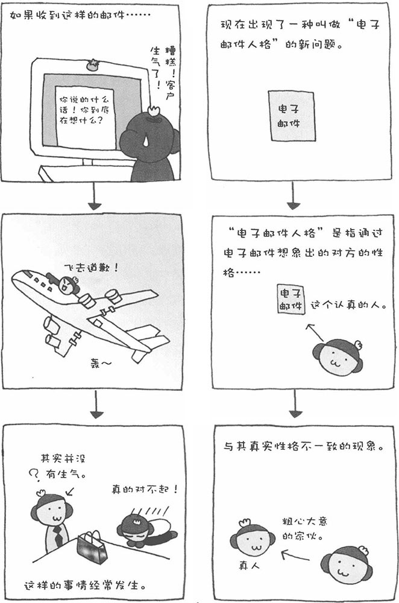

电子邮件是一种非常便利的交流工具。在现代人的工作和生活很忙碌，有时都不愿意过多交谈，总是一句"回头我给你电子邮件"了事。随着因特网的飞速发展，电子邮件给我们带来了诸多方便，但与此同时也产生了新的问题。其中之一就是所谓的"电子邮件人格"，即通过电子邮件内容了解到的发信人的性格与其实际性格不一致的现象。比如，某人写的电子邮件看起来冷冰冰的，而且似乎还很容易发怒，可是实际上那个人的性格却很温厚。不过，也有些人的电子邮件写得很诚恳，感觉上是个诚实的人，但实际接触以后才发现，那个人非常狡诈。
在普通的交往中，我们一般都会看着对方的表情说话。打电话时，则会通过对方的声音判断其态度。当然，有时我们是有意识地去这样做的，而有时则是无意识的。总之，在交往的过程中，人会根据对方态度的变化控制自己的言行，即所谓的"察言观色"。然而，通过电子邮件交流却无法观其色、闻其声。在面对面谈话时，我们可以根据对方的脸色判断其态度，然后调整自己的说话方式，选择合适的语气、语言，但通过电子邮件交流时却无法做到这一点。写邮件时，完全是自己一个人在说话，而且人还会出现一种兴奋状态，感情和情绪等有时甚至容易失控。这样写出来的邮件，肯定容易被对方误解。因此，我建议大家在发送邮件之前，应该站在对方的角度重新审视一下自己所写的邮件。
此外，收信人读邮件时也存在问题。我们不仅是在说话的时候，在其他时候也会根据对方传递来的各种各样的信息（眼神、服装、动作等）来分析其状态、判断其性格。然而，在读电子邮件时，根本看不到对方的样子，只能根据邮件的内容来想象对方的状态和性格，这样当然容易产生误解。
